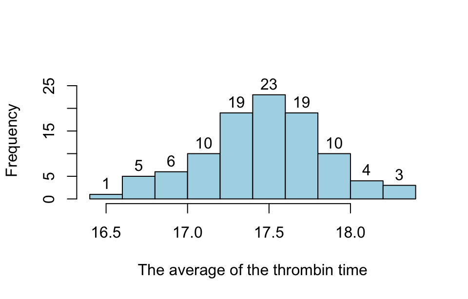
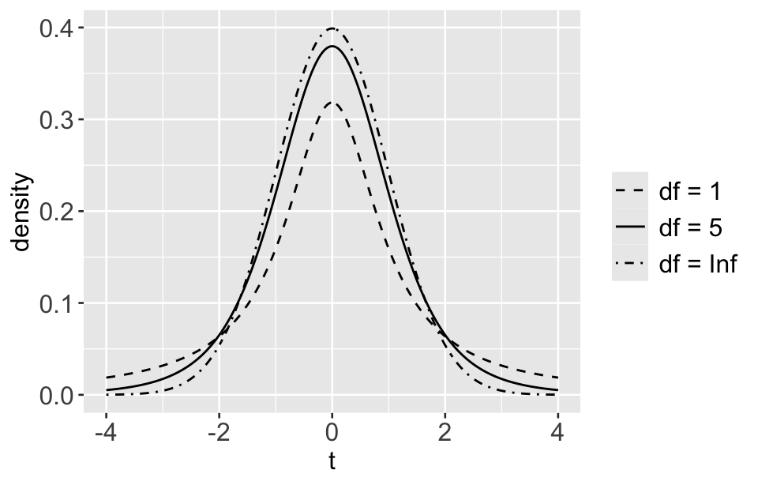

library(tidyverse)
library(rmarkdown)5 Statistical inference
In statistics we often use samples to infer population characteristics, since it’s impractical or impossible usually to measure the entire population. This process is called statistical inference. It involves using statistical techniques to make estimates, test hypothesis, and make predictions about population parameters.
5.1 Prerequisites
5.2 Distribution of sample means
The distribution of sample means is a fundamental concept in statistics, describing the distribution of sample means obtained from multiple samples drawn from the same population. Here is a example to demonstrate the distribution of sample means.
Example 1:
Assume thrombin time follow the normal distribution of \mu=17.5, \sigma=1.25. A researcher randomly drew 120 samples from the population, with each sample containing n=12 observations. The data is saved the the data below. The mean \bar{X} and standard deviation S for each sample are shown in Table 5.1, please analyze the distribution of the 120 means.
df <- read_csv("datasets/ex05-01.csv", show_col_types = F) |>
summarise_all(
list(
n = ~ n(),
median = median,
mean = mean,
sd = sd
)
) |>
pivot_longer(
cols = everything(),
names_to = c("sample", ".value"),
names_sep = "_"
) |>
mutate(across(c(mean, sd), \(x)round(x, 2)))
df |> paged_table()- 1
-
Here
n()must use a style of anonymous function, unlike the other three ones.
It is clear that the mean of each sample is different, and also may not equal to the mean of the population. The difference between a population parameter and a corresponding sample statistic is called sampling error. It arises because only a random sample of the entire population is observed, which may not perfectly represent the entire population.
To visualize the distribution of the 120 sample means, here we create a histogram:
df |>
select(mean) |>
pull() |>
hist(
freq = T,
right = F,
col = "skyblue",
include.lowest = T,
main = " ",
xlab = "The average of the thrombin time",
ylab = "Frequency",
ylim = c(0, 26),
labels = T
)
From the figure above we can say that the distribution of the sample mean can be approximated by a normal distribution. The two sample statistics of mean \bar{X} and standard deviation S can be achieved by the following code:
df |>
select(x = mean) |>
summarise(
mean = mean(x),
sd = sd(x)
) |>
round(digits = 1) |>
knitr::kable(align = "c")| mean | sd |
|---|---|
| 17.5 | 0.4 |
The mean of the sample means is 17.5, equal to the population mean \mu=1.75, while the standard deviation of the sample mean is 0.4, less than the standard deviation of population \sigma = 1.25.
5.2.1 Standard error
The standard deviation of the distribution of the sample means is called the standard error (SE). It reflects the typical distance between a sample mean and the population mean. The standard error of sample means is given by:
\sigma_{\bar{X}} = \frac{\sigma}{\sqrt{n}}
However, the population parameter \sigma is usually unknown, therefore, the sample standard deviation S is used as an estimator for the population standard deviation. Therefore, an estimation of the standard error above mentioned is defined by:
S_{\bar{X}} = \frac{S}{\sqrt{n}}
As the sample size n increases, the standard error decreases, meaning the sample means will be closer to the population mean.
It is need to be pointed out that the above formula for calculating the sampling error of the mean is only adapt to simple random sampling. For other sampling methods, there are corresponding formulas exist.
5.2.2 Central Limit Theorem
Regardless of the population distribution, as the sample size n becomes large (typically n \geq 30 is considered sufficient), the sampling distribution of the sample mean will approximate a normal distribution. This is the essence of the Central Limit Theorem in statistics.
For small sample sizes, if the population itself is normally distributed, the distribution of the sample means will also be normally distributed.
Because the sampling distribution of the sample means can be approximated by a normal distribution (especially for large n), it allows for the construction of confidence intervals for the population mean and the conducting of hypothesis tests. The normality of the sampling distribution justifies the use of z-test or t-test depending on whether the population variance is known or unknown and the sample size.
5.3 t distribution
The t-distribution, also known as Student’s t-distribution, is a probability distribution that is used in statistics when estimating population parameters when the sample size is small and/or the population variance is unknown. It’s especially important in confidence intervals, hypothesis testing, and regression analysis.
For a sample mean \bar{X} , sample standard deviation S , and sample size n , the t-statistic is calculated as:
t = \frac{\bar{X} - \mu}{S / \sqrt{n}}
Where \mu is the hypothesized population mean.
Visual Representation:
The t-distribution can be plotted to show how it compares with the normal distribution. It would have thicker tails, indicating a higher probability of values further from the mean, especially with smaller degrees of freedom. As degrees of freedom increase, the t-distribution curve will converge toward the standard normal distribution curve.

5.3.1 Key characteristics
- Shape: The t-distribution is similar to the standard normal distribution (bell-shaped and symmetric around zero), but it has heavier tails. This means it is more prone to producing values that fall far from its mean.
- Degrees of Freedom (df): The shape of the t-distribution depends on the degrees of freedom, which is typically related to the sample size (df = n - 1 for a single sample t-test). As the degrees of freedom increase, the t-distribution approaches the standard normal distribution. For large sample sizes (df > 30), the t-distribution and normal distribution are almost indistinguishable.
- Mean and Variance: The mean of the t-distribution is 0. • The variance is greater than 1 and depends on the degrees of freedom. Specifically, the variance is for df > 2 .
5.3.2 Common uses
- Confidence intervals: The t-distribution is used to construct confidence intervals for the population mean when the population variance is unknown and the sample size is small.
- t-test: Used to compare the means of two groups (independent or paired samples) when the sample size is small and the population standard deviation is unknown.
- One-sample t-test: Tests if the mean of a single sample is significantly different from a known value.
- Two-sample t-test: Tests if the means of two independent groups are significantly different.
- Paired t-test: Tests if the means of two related groups (e.g., before and after measurements) are significantly different.
- Regression Analysis: In linear regression, t-test are used to determine whether the coefficients of the independent variables are significantly different from zero.
Example:
Example 2:
Imagine you have a small sample of 15 observations, and you want to test if the mean of this sample is different from a known value, say 50. Since the sample size is small, you would use the t-distribution to conduct this test, accounting for the fact that the true standard deviation of the population is unknown.
5.4 Parameter estimation
Parameter estimation is a concept in statistics that involves using sample data to estimate the parameters of a population. The sample should be random and large enough to provide an accurate estimate. A parameter is a numerical characteristic of a population, such as a mean, proportion, or standard deviation. There are two types of parameter estimation:
5.4.1 Point estimation
This involves using sample data to calculate a single value that serves as the best guess for a population parameter (e.g., mean, proportion). However, obtaining an exact point estimate of the population parameter from just one random sample is almost unattainable.
Calculate the sample mean \bar{x}: The sample mean is calculated using the formula:
\bar{x} = \frac{1}{n} \sum_{i=1}^{n} x_i
where n is the sample size, and x_i are the individual sample values. The sample mean (\bar{x}) serves as an estimate of the population mean (\mu).
Hower, a point estimate does not consider the sampling error and cannot tell you how close the estimate is likely to be to the true population mean. Instead of relying on a single point estimate, interval estimation are often used because they provide a range of values within which the true population mean is likely to lie. along with a level of confidence (e.g., 95%).
5.4.2 Confidence Intervals
A confidence interval (CI) is associated with a confidence level, typically 95%, which indicates the degree of certainty that the true population mean falls in the range. For example, a 95% confidence interval can be calculated as:
\text{CI} = \bar{x} \pm z \times \text{SE}
where z is the critical value from the standard normal distribution (e.g., 1.96 for 95% confidence); \text{SE} denotes standard error of the mean, which indicates how much the sample mean is expected to vary from the true population mean:
SE = \frac{S}{\sqrt{n}}
where S is the sample standard deviation, n is the sample size.
5.4.3 Assumptions
In Statistical Inference there are two assumptions:
- Random sampling: The sample should be randomly selected to avoid bias.
- Independence: Observations in the sample should be independent of each other.
5.5 Hypothesis test
Hypothesis test is a formal procedure for comparing sample data against a hypothesis about the population. It involves: Null Hypothesis (H_0): The default assumption, typically that there is no effect or difference. Alternative Hypothesis (H_1): The hypothesis that there is an effect or difference. Test Statistic: A standardized value calculated from sample data, used to assess the strength of evidence against H_0. P-value: The probability of observing the data, or something more extreme, assuming H_0 is true. Decision Rule: Based on the p-value and a significance level (e.g., 0.05), the researcher decides whether to reject H_0.
Hypothesis test will be in next chapter
5.6 Prediction
Using sample data to predict future observations or outcomes within the population. Prediction involves estimating the expected value of a dependent variable based on independent variables.